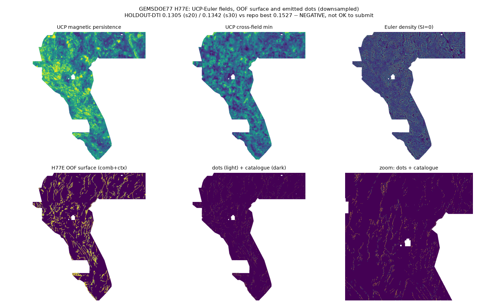

H77E lane: upward-continuation persistence + Euler depth coherence
Verdict: NEGATIVE. Not OK to submit; OK to download for inspection/research only. Selector: not approved. The candidate scores 0.1305 (seed 20) / 0.1342 (seed 30) HOLDOUT-DTI, below this repository's best 0.15272, and 83.5% of its final dots fall within 3 px of one checked registry raster (GEMSDOE67 ovtr-ml-cover), so a duplicate is logged and the lane is stopped under protocol rule 1. The new UCP/Euler block alone scores 0.0396 HOLDOUT-DTI, below the random-allocation arm (0.0476). The file itself passes every local portal-format check (values in [0,1], no NaN, exact grid).
⬇ H77E file — download only, do not submit
Download .tif Same file as one-TIFF .zip Not a submission download:gems77-h77e-ucpeuler-ctx-37654dots-20261021-22873551-nan.tif contains NaNs outside the footprint and fails the strict all-pixel [0,1] preflight.
Submission name (for reference) (61 characters)
gems77-h77e-ucpeuler-ctx-37654dots-20261021-22873551-zerosNote (for reference; do not use) (109 characters)
H77E UCP-Euler+LOCO-ctx submod 37654; HOLDOUT-DTI 0.1305/0.1342 < best 0.1527; NEGATIVE not selector-approvedsha256 of the .tif: 2269b714c78262a8d45dbd5eb02290a27ec9b99afe02340e343f5cb1ac7c58f3 · 37,654 binary dots · 0 on catalogue · JSON run card
Can I submit it?
No. Format-valid is not approval. This lane is holdout-negative, a final-dot duplicate is logged against the checked registry, protocol uniqueness is false (incomplete registry this session + Policy I17 dense-witness reading), and the selector has not approved any file in this repository. Do not upload this file to DrivenData. It is safe to download for inspection, reproduction and further research. How a promoted file would be submitted is described in the H77E submission guide.
Hypothesis and mechanism
Hypothesis (preregistered, registry/preregistration_h77e.json): deep basement source edges that persist under Fourier upward continuation in both magnetics and gravity, with depth-coherent Euler (SI=0) solutions, mark buried intrabasin faults missing from the USGS/INGENIOUS surface catalogue. Mechanism: exp(−|k|h) continuation of RTP + isostatic gravity to 200/400/800 m, analytic-signal persistence and 800 m edge, cross-field minimum, Euler deconvolution (Reid et al. 1990) density/depth/coherence, magnetic texture suppression — combined with the raw 19 bands and LOCO-style catalogue-context, ranked by HGB and emitted as 37,654 dots >3 px from the catalogue via the shared 300 m submodular allocator.
Named non-fault mimic: intrusive/lithologic basement contacts and caldera margins (deep, persistent, Euler-coherent — indistinguishable by this signature alone); GeoDAWN survey-block seams; thick uniform alluvium for the texture block. The holdout result below is consistent with the mimic dominating: the new block alone underperforms random allocation.
Experiments (3 of 3, budget respected)
| Exp | What | Result | Evidence |
|---|---|---|---|
| E1 | Build 11 label-free UCP/Euler/texture fields; single-feature leakage canaries (seed-20 draw) | No leakage: worst symmetric AUC 0.529 (ucp_mag_persist) ≤ 0.90. Euler SI=0 singularity bug found, fixed, synthetic-tested before E2. | h77e_e1_fields_canary.json |
| E2 | Dual-seed hide-and-recover holdout (gems57-pooled-hide-v2), 6 arms seed 20, 2 arms seed 30 | Candidate 0.1305 / 0.1342; new block alone 0.0396 < random 0.0476; gain is catalogue-context driven | h77e_e2_holdout.json |
| E3 | Full-map 4-quadrant cross-fitted build, shared-writer packaging, validator, surface + final-dot uniqueness | Format PASS; surface |ρ| max 0.166; final-dot duplicate logged (0.835 vs GEMSDOE67 ml-cover) | h77e_e3_build.json · h77e_uniqueness.json · h77e_validator.json |
Holdout (E2) — HOLDOUT-DTI, evaluator gems57-pooled-hide-v2, α=0.2, β=0.8, 300 m triangular kernel
| Arm (seed 20, B=37,654) | HOLDOUT-DTI | 95% CI | Withheld positives |
|---|---|---|---|
| A_ucp (new block alone) | 0.0396 | 0.0326–0.0470 | 11,321 |
| A0_random | 0.0476 | 0.0412–0.0535 | 11,321 |
| A_comb (std + new, no context) | 0.0606 | 0.0438–0.0792 | 11,321 |
| A_std (raw 19 bands) | 0.0659 | 0.0492–0.0838 | 11,321 |
| A0_champion (fold-fair H19-5 construction) | 0.0957 | 0.0825–0.1086 | 11,321 |
| A_comb_ctx (candidate) | 0.1305 | 0.1158–0.1457 | 11,321 |
| A_comb_ctx, seed 30 replication | 0.1342 | 0.1183–0.1512 | 11,342 |
| Repo best before this lane (H77-Step) | 0.1527 | — | 11,321 |
Paired Δ candidate − champion = +0.0348 (95% CI +0.0164 to +0.0540, seed 20), but the candidate does not beat the 0.15272 promotion bar, and its margin comes from catalogue-context continuation — holdout-strong but, per this repo's earlier analysis, live-weak. A projection is never a score: no organizer score exists for this file.

Why 0.2778, and why this does not beat it
The 0.2778 file (GEMSDOE32, OWNER-REPORT) is an emission optimum — dotted, catalogue-flank-pruned H19-5 line set — on a 0.19-class field. Beating it needs a better field (≈ +60% realised credit per dot at the leader's level), not a new thinning rule. H77E tested a new field and it moved the wrong way on the validated proxy: its novel physics alone is weaker than random allocation for recovering held-out catalogue faults, because deep basement contacts are mostly the named non-fault mimic. The full analysis is in the repository's Why 0.2778 page and the lane report on GitHub.
Official sources
- DrivenData GEMS problem description — task, metric, format
- DrivenData GEMS leaderboard — 0.4413 leader (ORGANIZER-CONFIRMED as a leaderboard value)
- Reid et al. 1990, Geophysics 55:80–91 (Euler deconvolution, DOI 10.1190/1.1442774)
- SEG Wiki: upward continuation
- USGS GeoDAWN data release
- GBCGE INGENIOUS · EPSG:32611 · Tversky index